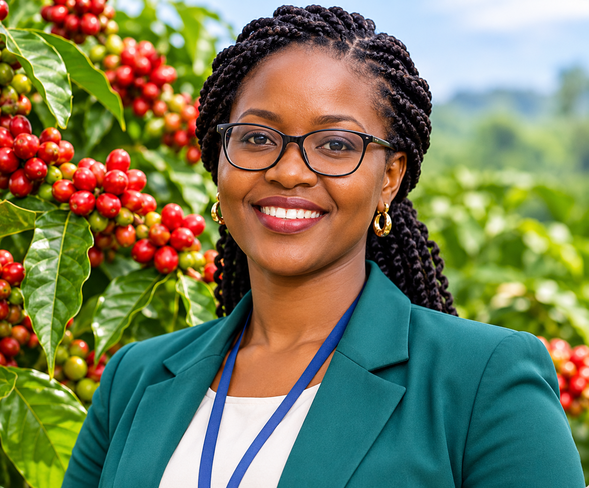
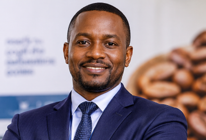
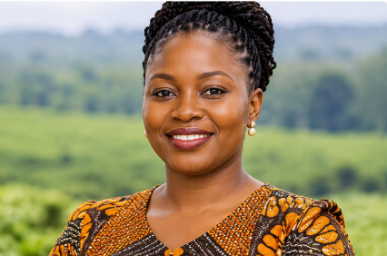
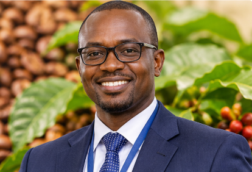

Featured Speakers

Dr. Sarah Namutebi
Coffee Research Specialist
National Agricultural Research Organisation
Dr. Namutebi specialises in coffee research and agricultural development. Her work focuses on improving coffee productivity and promoting sustainable farming practices.

Peter Mwangi
Director of Coffee Technology
East African Coffee Innovation Centre
Peter works with coffee processors to introduce modern technologies into production. He advocates for innovation that improves efficiency and product quality.

Grace Achieng
Enterprise Development Consultant
African Agribusiness Network
Grace supports entrepreneurs and small businesses in agricultural value chains. She promotes opportunities for women and young people in coffee production and trade.

David Mensah
International Coffee Trade Expert
Global Coffee Trade Association
David has experience in international agricultural trade and export development. He advises coffee businesses on accessing global markets and meeting international standards.
More Speakers
| Name | Organisation | Country | Session Title |
|---|---|---|---|
| Maria Kato | Uganda Coffee Development Centre | Uganda | Coffee Tasting and Quality Assessment |
| Samuel Njoroge | Kenya Coffee Research Institute | Kenya | Climate-Smart Coffee Production |
| Fatima Hassan | African Coffee Export Council | Ethiopia | Expanding African Coffee Markets |
| Robert Okafor | West African Coffee Alliance | Nigeria | Investment in Coffee Value Chains |
Call for Papers
Researchers, academics, agricultural professionals and industry practitioners are invited to submit original papers addressing developments in coffee production, processing, technology, sustainability and international trade.
Submissions should include a clear title, author details, an abstract and a summary of the proposed presentation. Selected contributors will be invited to present their work during the Uganda International Coffee Expo 2026.
Key Submission Dates
| Milestone | Date | Status |
|---|---|---|
| Call for Papers Opens | 1 March 2026 | Open |
| Submission Deadline | 30 June 2026 | Upcoming |
| Notification of Acceptance | 31 July 2026 | Upcoming |